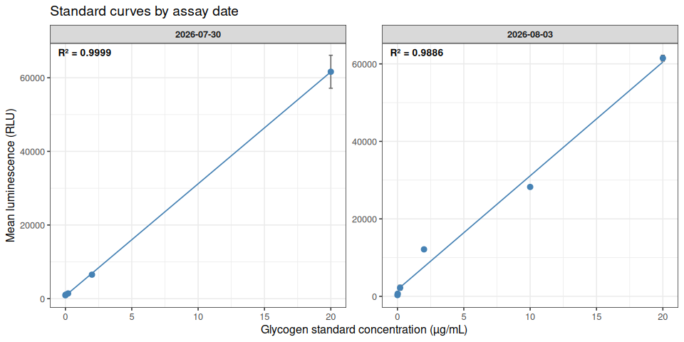
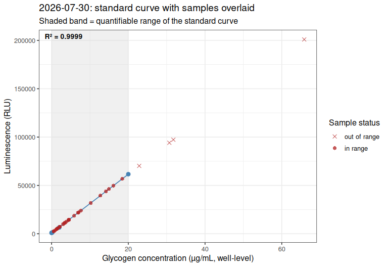
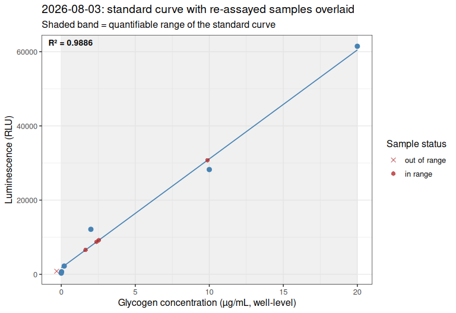
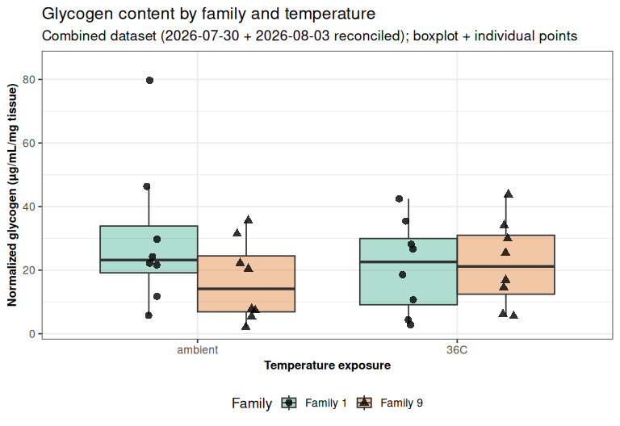
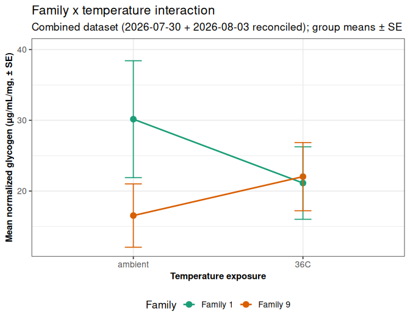

INTRO
This notebook analyzed glycogen content in Magallana gigas (Pacific oyster) ctenidia samples from USDA families 1 and 9, comparing ambient vs. 36°C temperature exposure, results from two assay dates (20260730 and 20260803 (Notebook entries)).
See the BACKGROUND section below for details on the re-assay rationale, the standard-curve QC checks, and the outlier/replicate-exclusion analysis for 1_04_36C.
This section was knitted from https://github.com/RobertsLab/sormi-assay-development/blob/main/Glycogen/code/Gen5-20260804-mgig-fams1_9-glycogen-glo-combined.Rmd (GitHub).
1 BACKGROUND
Combined glycogen analysis of Magallana gigas (Pacific oyster) ctenidia samples from USDA families 1 and 9, comparing ambient vs. 36°C temperature exposure, using the Glycogen-Glo Assay (Promega) (GitHub; PDF).
This document merges results from two assay dates:
2026-07-30 (
Gen5-20260730-mgig-fams1_9-glycogen-glo): the full 32-sample experiment (all family × temperature combinations), samples run at 1:25 dilution on one plate, standard curve + negative control run on a separate plate.2026-08-03 (
Gen5-20260803-mgig-fams1_9-glycogen-glo): a targeted re-assay of 5 samples at 1:200 dilution (~8× higher), run alongside a fresh, same-plate standard curve. Four of these five (1_08_ambient,1_06_ambient,1_05_36C,9_05_ambient) had read above the top standard (20 µg/mL) in the original run and required extrapolation; the fifth (1_04_36C) was in range originally but had an elevated technical-replicate CV (30.1%).
Reconciliation rule applied here: for each of the 32 samples, this document selects whichever available measurement falls within its own run’s standard-curve range (interpolated rather than extrapolated), preferring the more recent run as a tiebreaker if more than one candidate qualifies. In practice this means:
1_08_ambient,1_06_ambient,1_05_36C,9_05_ambient: the 2026-08-03 (1:200) value is used, since it is in-range and the 2026-07-30 value was extrapolated.1_04_36C: the 2026-07-30 (1:25) value is used per instruction – its 2026-08-03 (1:200) re-assay read below the standard curve’s floor (negative back-calculated concentration, unusable), so the original in-range-but-high-CV value is retained here rather than the unusable re-assay value.- All other 28 samples: only the 2026-07-30 value exists and is used as-is.
Full detail on the re-assay rationale, the standard-curve QC checks, and the outlier/replicate-exclusion analysis for 1_04_36C (a Grubbs test found no statistical basis for dropping a replicate, and a general “exclude any replicate outside 1 SD of the triplicate mean” rule was tested and rejected as a mathematical inevitability for n=3, not a data-quality signal) are documented in the two source analyses linked above and are not repeated here.
1.1 Sample naming
Per ../data/raw_luminescence/README.md, plate layout entries follow <sample>-<assay_type>-<tissue_weight>-df.<dilution_factor>, with sample tokens formatted as <family>_<individual>_<temperature>, e.g. 1_06_ambient-glyc-11.0-df.25. Standards are labeled STD-glyc-<concentration> and the negative (buffer-only) control NEG-glyc.
2 SETUP
2.1 Libraries
library(knitr)
library(ggplot2)
library(dplyr)##
## Attaching package: 'dplyr'
## The following objects are masked from 'package:stats':
##
## filter, lag
## The following objects are masked from 'package:base':
##
## intersect, setdiff, setequal, unionlibrary(tidyr)
knitr::opts_chunk$set(
echo = TRUE, # Display code chunks
eval = TRUE, # Evaluate code chunks
warning = FALSE, # Hide warnings
message = FALSE, # Hide messages
comment = "", # Prevents appending '##' to beginning of lines in code output
results = 'hold' # Holds output so it's all printed together after code chunk
)2.2 Set output directory
output_dir <- "../output/Gen5-20260804-mgig-fams1_9-glycogen-glo-combined"
dir.create(output_dir, showWarnings = FALSE, recursive = TRUE)3 DATA IMPORT
Raw plate-reader exports (comma-separated, no header, one row per plate row A-H and one column per plate column 1-12) are read separately for each plate, for both assay dates.
data_dir <- "../data/raw_luminescence"
# 2026-07-30: plate-01 (32 samples, triplicate wells), plate-02 (standard curve + neg. control)
layout_0730_plate01 <- read.csv(file.path(data_dir, "layout-Gen5-20260730-mgig-fams1_9-plate-01.csv"),
header = FALSE, stringsAsFactors = FALSE)
raw_0730_plate01 <- read.csv(file.path(data_dir, "raw_lum-Gen5-20260730-mgig-fams1_9-plate-01.csv"),
header = FALSE)
layout_0730_plate02 <- read.csv(file.path(data_dir, "layout-Gen5-20260730-mgig-fams1_9-plate-02.csv"),
header = FALSE, stringsAsFactors = FALSE)
raw_0730_plate02 <- read.csv(file.path(data_dir, "raw_lum-Gen5-20260730-mgig-fams1_9-plate-02.csv"),
header = FALSE)
# 2026-08-03: single plate (5 re-assayed samples + fresh standard curve + neg. control)
layout_0803_plate01 <- read.csv(file.path(data_dir, "layout-Gen5-20260803-mgig-fams1_9-plate-01.csv"),
header = FALSE, stringsAsFactors = FALSE)
raw_0803_plate01 <- read.csv(file.path(data_dir, "raw_lum-Gen5-20260803-mgig-fams1_9-plate-01.csv"),
header = FALSE)
cat("2026-07-30 plate-01 dims:", dim(layout_0730_plate01), "\n")
cat("2026-07-30 plate-02 dims:", dim(layout_0730_plate02), "\n")
cat("2026-08-03 plate-01 dims:", dim(layout_0803_plate01), "\n")2026-07-30 plate-01 dims: 8 12
2026-07-30 plate-02 dims: 8 12
2026-08-03 plate-01 dims: 8 12 4 PLATE RESHAPING
Converts each plate’s row/column layout into long format (one row per well), dropping any well without a sample/standard label (empty wells).
plate_to_long <- function(layout, luminescence, plate_label) {
n_row <- 8
n_col <- 12
out <- expand.grid(plate_row_idx = 1:n_row, plate_col = 1:n_col)
out$plate <- plate_label
out$plate_row <- LETTERS[out$plate_row_idx]
out$well <- sprintf("%s%02d", out$plate_row, out$plate_col)
out$label <- trimws(as.character(mapply(function(i, j) layout[i, j],
out$plate_row_idx, out$plate_col)))
out$luminescence <- as.numeric(mapply(function(i, j) luminescence[i, j],
out$plate_row_idx, out$plate_col))
out <- out[order(out$plate_row_idx, out$plate_col), ]
out[out$label != "" & !is.na(out$label), ]
}plate_0730_01_long <- plate_to_long(layout_0730_plate01, raw_0730_plate01, "0730-plate-01")
plate_0730_02_long <- plate_to_long(layout_0730_plate02, raw_0730_plate02, "0730-plate-02")
plate_0803_01_long <- plate_to_long(layout_0803_plate01, raw_0803_plate01, "0803-plate-01")
cat("--- plate_0730_01_long ---\n")
str(plate_0730_01_long)
cat("\n--- plate_0730_02_long ---\n")
str(plate_0730_02_long)
cat("\n--- plate_0803_01_long ---\n")
str(plate_0803_01_long)--- plate_0730_01_long ---
'data.frame': 96 obs. of 7 variables:
$ plate_row_idx: int 1 1 1 1 1 1 1 1 1 1 ...
$ plate_col : int 1 2 3 4 5 6 7 8 9 10 ...
$ plate : chr "0730-plate-01" "0730-plate-01" "0730-plate-01" "0730-plate-01" ...
$ plate_row : chr "A" "A" "A" "A" ...
$ well : chr "A01" "A02" "A03" "A04" ...
$ label : chr "1_01_ambient-glyc-7.0-df.25" "1_01_ambient-glyc-7.0-df.25" "1_01_ambient-glyc-7.0-df.25" "1_02_ambient-glyc-4.7-df.25" ...
$ luminescence : num 11367 10284 10754 14834 14603 ...
- attr(*, "out.attrs")=List of 2
..$ dim : Named int [1:2] 8 12
.. ..- attr(*, "names")= chr [1:2] "plate_row_idx" "plate_col"
..$ dimnames:List of 2
.. ..$ plate_row_idx: chr [1:8] "plate_row_idx=1" "plate_row_idx=2" "plate_row_idx=3" "plate_row_idx=4" ...
.. ..$ plate_col : chr [1:12] "plate_col= 1" "plate_col= 2" "plate_col= 3" "plate_col= 4" ...
--- plate_0730_02_long ---
'data.frame': 18 obs. of 7 variables:
$ plate_row_idx: int 1 1 1 1 1 1 1 1 1 1 ...
$ plate_col : int 1 2 3 4 5 6 7 8 9 10 ...
$ plate : chr "0730-plate-02" "0730-plate-02" "0730-plate-02" "0730-plate-02" ...
$ plate_row : chr "A" "A" "A" "A" ...
$ well : chr "A01" "A02" "A03" "A04" ...
$ label : chr "STD-glyc-20" "STD-glyc-20" "STD-glyc-20" "STD-glyc-2" ...
$ luminescence : num 53166 68390 63329 6947 6432 ...
- attr(*, "out.attrs")=List of 2
..$ dim : Named int [1:2] 8 12
.. ..- attr(*, "names")= chr [1:2] "plate_row_idx" "plate_col"
..$ dimnames:List of 2
.. ..$ plate_row_idx: chr [1:8] "plate_row_idx=1" "plate_row_idx=2" "plate_row_idx=3" "plate_row_idx=4" ...
.. ..$ plate_col : chr [1:12] "plate_col= 1" "plate_col= 2" "plate_col= 3" "plate_col= 4" ...
--- plate_0803_01_long ---
'data.frame': 36 obs. of 7 variables:
$ plate_row_idx: int 1 1 1 1 1 1 1 1 1 1 ...
$ plate_col : int 1 2 3 4 5 6 7 8 9 10 ...
$ plate : chr "0803-plate-01" "0803-plate-01" "0803-plate-01" "0803-plate-01" ...
$ plate_row : chr "A" "A" "A" "A" ...
$ well : chr "A01" "A02" "A03" "A04" ...
$ label : chr "9_05-ambient-glyc-9.2-df.200" "9_05-ambient-glyc-9.2-df.200" "9_05-ambient-glyc-9.2-df.200" "1_06_ambient-glyc-11.0-df.200" ...
$ luminescence : num 6528 6498 6599 9137 9214 ...
- attr(*, "out.attrs")=List of 2
..$ dim : Named int [1:2] 8 12
.. ..- attr(*, "names")= chr [1:2] "plate_row_idx" "plate_col"
..$ dimnames:List of 2
.. ..$ plate_row_idx: chr [1:8] "plate_row_idx=1" "plate_row_idx=2" "plate_row_idx=3" "plate_row_idx=4" ...
.. ..$ plate_col : chr [1:12] "plate_col= 1" "plate_col= 2" "plate_col= 3" "plate_col= 4" ...5 STANDARD CURVES
Each assay date has its own standard curve (glycogen standards run alongside the samples), fit independently – samples are always back-calculated against the curve from their own assay date/plate, never a curve from a different run.
standards_0730 <- plate_0730_02_long %>%
filter(grepl("^STD-glyc-", label)) %>%
mutate(glyc_concentration = as.numeric(sub("^STD-glyc-", "", label)),
run = "2026-07-30")
negative_0730 <- plate_0730_02_long %>%
filter(grepl("^NEG-glyc", label)) %>%
mutate(run = "2026-07-30")
standards_0803 <- plate_0803_01_long %>%
filter(grepl("^STD-glyc-", label)) %>%
mutate(glyc_concentration = as.numeric(sub("^STD-glyc-", "", label)),
run = "2026-08-03")
negative_0803 <- plate_0803_01_long %>%
filter(grepl("^NEG-glyc", label)) %>%
mutate(run = "2026-08-03")
cat("--- standards_0730 ---\n")
str(standards_0730)
cat("\n--- standards_0803 ---\n")
str(standards_0803)
cat("\nNegative control, 2026-07-30 (n =", nrow(negative_0730), "): mean luminescence =",
round(mean(negative_0730$luminescence), 1), "\n")
cat("Negative control, 2026-08-03 (n =", nrow(negative_0803), "): mean luminescence =",
round(mean(negative_0803$luminescence), 1), "\n")--- standards_0730 ---
'data.frame': 15 obs. of 9 variables:
$ plate_row_idx : int 1 1 1 1 1 1 1 1 1 1 ...
$ plate_col : int 1 2 3 4 5 6 7 8 9 10 ...
$ plate : chr "0730-plate-02" "0730-plate-02" "0730-plate-02" "0730-plate-02" ...
$ plate_row : chr "A" "A" "A" "A" ...
$ well : chr "A01" "A02" "A03" "A04" ...
$ label : chr "STD-glyc-20" "STD-glyc-20" "STD-glyc-20" "STD-glyc-2" ...
$ luminescence : num 53166 68390 63329 6947 6432 ...
$ glyc_concentration: num 20 20 20 2 2 2 0.2 0.2 0.2 0.02 ...
$ run : chr "2026-07-30" "2026-07-30" "2026-07-30" "2026-07-30" ...
- attr(*, "out.attrs")=List of 2
..$ dim : Named int [1:2] 8 12
.. ..- attr(*, "names")= chr [1:2] "plate_row_idx" "plate_col"
..$ dimnames:List of 2
.. ..$ plate_row_idx: chr [1:8] "plate_row_idx=1" "plate_row_idx=2" "plate_row_idx=3" "plate_row_idx=4" ...
.. ..$ plate_col : chr [1:12] "plate_col= 1" "plate_col= 2" "plate_col= 3" "plate_col= 4" ...
--- standards_0803 ---
'data.frame': 18 obs. of 9 variables:
$ plate_row_idx : int 3 3 3 3 3 3 3 3 3 3 ...
$ plate_col : int 1 2 3 4 5 6 7 8 9 10 ...
$ plate : chr "0803-plate-01" "0803-plate-01" "0803-plate-01" "0803-plate-01" ...
$ plate_row : chr "C" "C" "C" "C" ...
$ well : chr "C01" "C02" "C03" "C04" ...
$ label : chr "STD-glyc-20" "STD-glyc-20" "STD-glyc-20" "STD-glyc-10" ...
$ luminescence : num 61432 62800 60190 28374 27652 ...
$ glyc_concentration: num 20 20 20 10 10 10 2 2 2 0.2 ...
$ run : chr "2026-08-03" "2026-08-03" "2026-08-03" "2026-08-03" ...
- attr(*, "out.attrs")=List of 2
..$ dim : Named int [1:2] 8 12
.. ..- attr(*, "names")= chr [1:2] "plate_row_idx" "plate_col"
..$ dimnames:List of 2
.. ..$ plate_row_idx: chr [1:8] "plate_row_idx=1" "plate_row_idx=2" "plate_row_idx=3" "plate_row_idx=4" ...
.. ..$ plate_col : chr [1:12] "plate_col= 1" "plate_col= 2" "plate_col= 3" "plate_col= 4" ...
Negative control, 2026-07-30 (n = 3 ): mean luminescence = 913
Negative control, 2026-08-03 (n = 3 ): mean luminescence = 583.3 fit_curve <- function(standards) {
summ <- standards %>%
group_by(glyc_concentration) %>%
summarise(
glyc_mean_luminescence = mean(luminescence),
glyc_sd = sd(luminescence),
glyc_se = sd(luminescence) / sqrt(n()),
glyc_cv = 100 * sd(luminescence) / mean(luminescence),
glyc_n = n(),
.groups = "drop"
) %>%
arrange(glyc_concentration)
lm_model <- lm(glyc_mean_luminescence ~ glyc_concentration, data = summ)
list(
summary = summ,
model = lm_model,
slope = unname(coef(lm_model)[2]),
intercept = unname(coef(lm_model)[1]),
r2 = summary(lm_model)$r.squared,
conc_min = min(summ$glyc_concentration[summ$glyc_concentration > 0]),
conc_max = max(summ$glyc_concentration),
fit_min = min(summ$glyc_concentration),
fit_max = max(summ$glyc_concentration)
)
}
curve_0730 <- fit_curve(standards_0730)
curve_0803 <- fit_curve(standards_0803)
cat("--- 2026-07-30 standard curve ---\n")
str(curve_0730$summary)
cat("slope:", curve_0730$slope, " intercept:", curve_0730$intercept,
" R2:", round(curve_0730$r2, 5), "\n")
cat("quantifiable range:", curve_0730$conc_min, "-", curve_0730$conc_max, "ug/mL\n\n")
cat("--- 2026-08-03 standard curve ---\n")
str(curve_0803$summary)
cat("slope:", curve_0803$slope, " intercept:", curve_0803$intercept,
" R2:", round(curve_0803$r2, 5), "\n")
cat("quantifiable range:", curve_0803$conc_min, "-", curve_0803$conc_max, "ug/mL\n")--- 2026-07-30 standard curve ---
tibble [5 × 6] (S3: tbl_df/tbl/data.frame)
$ glyc_concentration : num [1:5] 0 0.02 0.2 2 20
$ glyc_mean_luminescence: num [1:5] 910 1087 1410 6512 61628
$ glyc_sd : num [1:5] 13.5 107.2 30.4 401.5 7753.2
$ glyc_se : num [1:5] 7.81 61.89 17.52 231.79 4476.3
$ glyc_cv : num [1:5] 1.49 9.86 2.15 6.17 12.58
$ glyc_n : int [1:5] 3 3 3 3 3
slope: 3039.495 intercept: 801.7511 R2: 0.99993
quantifiable range: 0.02 - 20 ug/mL
--- 2026-08-03 standard curve ---
tibble [6 × 6] (S3: tbl_df/tbl/data.frame)
$ glyc_concentration : num [1:6] 0 0.02 0.2 2 10 20
$ glyc_mean_luminescence: num [1:6] 313 681 2220 12126 28236 ...
$ glyc_sd : num [1:6] 256 107 1100 338 529 ...
$ glyc_se : num [1:6] 147.7 61.9 635.4 194.9 305.5 ...
$ glyc_cv : num [1:6] 81.82 15.73 49.57 2.78 1.87 ...
$ glyc_n : int [1:6] 3 3 3 3 3 3
slope: 2937.696 intercept: 1732.959 R2: 0.98861
quantifiable range: 0.02 - 20 ug/mL5.1 Plot standard curves
curve_plot_data <- bind_rows(
curve_0730$summary %>% mutate(run = "2026-07-30"),
curve_0803$summary %>% mutate(run = "2026-08-03")
)
curve_fit_lines <- bind_rows(
data.frame(run = "2026-07-30", slope = curve_0730$slope, intercept = curve_0730$intercept,
fit_min = curve_0730$fit_min, fit_max = curve_0730$fit_max, r2 = curve_0730$r2),
data.frame(run = "2026-08-03", slope = curve_0803$slope, intercept = curve_0803$intercept,
fit_min = curve_0803$fit_min, fit_max = curve_0803$fit_max, r2 = curve_0803$r2)
) %>%
mutate(
y_start = intercept + slope * fit_min,
y_end = intercept + slope * fit_max,
r2_label = paste0("R\u00b2 = ", sprintf("%.4f", r2))
)
cat("--- curve_fit_lines: trend-line endpoints + R2 per run ---\n")
str(curve_fit_lines)
standard_curve_plot <- ggplot(curve_plot_data, aes(x = glyc_concentration, y = glyc_mean_luminescence)) +
geom_segment(data = curve_fit_lines,
aes(x = fit_min, xend = fit_max, y = y_start, yend = y_end),
color = "steelblue", linewidth = 0.6, inherit.aes = FALSE) +
geom_errorbar(aes(ymin = glyc_mean_luminescence - glyc_se, ymax = glyc_mean_luminescence + glyc_se),
width = 0.3, color = "grey40") +
geom_point(size = 2.4, color = "steelblue") +
geom_text(data = curve_fit_lines, aes(x = -Inf, y = Inf, label = r2_label),
hjust = -0.15, vjust = 1.8, inherit.aes = FALSE, size = 3.6, fontface = "bold") +
facet_wrap(~ run, scales = "free_y") +
labs(x = "Glycogen standard concentration (\u00b5g/mL)",
y = "Mean luminescence (RLU)",
title = "Standard curves by assay date") +
theme_bw(base_size = 12) +
theme(strip.text = element_text(face = "bold"))
print(standard_curve_plot)
ggsave(file.path(output_dir, "standard_curves_both_runs.png"), standard_curve_plot,
width = 10, height = 5, dpi = 300)--- curve_fit_lines: trend-line endpoints + R2 per run ---
'data.frame': 2 obs. of 9 variables:
$ run : chr "2026-07-30" "2026-08-03"
$ slope : num 3039 2938
$ intercept: num 802 1733
$ fit_min : num 0 0
$ fit_max : num 20 20
$ r2 : num 1 0.989
$ y_start : num 802 1733
$ y_end : num 61592 60487
$ r2_label : chr "R² = 0.9999" "R² = 0.9886"6 SAMPLE LABEL PARSING
Sample labels are parsed into family, individual, temperature, tissue weight, and dilution factor. Both runs’ sample wells (excluding standards and the negative control) use the same label grammar.
parse_samples <- function(plate_long) {
plate_long %>%
filter(!grepl("^STD-glyc-|^NEG-glyc", label)) %>%
mutate(label_clean = sub("^([19])[-_]([0-9]{2})[-_](ambient|36C)-", "\\1_\\2_\\3-", label)) %>%
mutate(
sample_id = sub("-glyc-.*$", "", label_clean),
family = sub("^([19])_.*$", "\\1", label_clean),
individual = sub("^[19]_([0-9]{2})_.*$", "\\1", label_clean),
temperature = sub("^[19]_[0-9]{2}_([^-]+)-.*$", "\\1", label_clean),
weight_mg = as.numeric(sub("^.*-glyc-([0-9.]+)-df\\..*$", "\\1", label_clean)),
dilution = as.numeric(sub("^.*-df\\.", "", label_clean))
) %>%
mutate(
family = factor(paste("Family", family), levels = c("Family 1", "Family 9")),
temperature = factor(temperature, levels = c("ambient", "36C"))
)
}samples_0730 <- parse_samples(plate_0730_01_long)
samples_0803 <- parse_samples(plate_0803_01_long)
cat("--- samples_0730 ---\n")
str(samples_0730)
cat("\n--- samples_0803 ---\n")
str(samples_0803)
cat("\n2026-07-30: ", length(unique(samples_0730$sample_id)), "unique samples,",
nrow(samples_0730), "wells (triplicate).\n")
cat("2026-08-03: ", length(unique(samples_0803$sample_id)), "unique samples,",
nrow(samples_0803), "wells (triplicate).\n")--- samples_0730 ---
'data.frame': 96 obs. of 14 variables:
$ plate_row_idx: int 1 1 1 1 1 1 1 1 1 1 ...
$ plate_col : int 1 2 3 4 5 6 7 8 9 10 ...
$ plate : chr "0730-plate-01" "0730-plate-01" "0730-plate-01" "0730-plate-01" ...
$ plate_row : chr "A" "A" "A" "A" ...
$ well : chr "A01" "A02" "A03" "A04" ...
$ label : chr "1_01_ambient-glyc-7.0-df.25" "1_01_ambient-glyc-7.0-df.25" "1_01_ambient-glyc-7.0-df.25" "1_02_ambient-glyc-4.7-df.25" ...
$ luminescence : num 11367 10284 10754 14834 14603 ...
$ label_clean : chr "1_01_ambient-glyc-7.0-df.25" "1_01_ambient-glyc-7.0-df.25" "1_01_ambient-glyc-7.0-df.25" "1_02_ambient-glyc-4.7-df.25" ...
$ sample_id : chr "1_01_ambient" "1_01_ambient" "1_01_ambient" "1_02_ambient" ...
$ family : Factor w/ 2 levels "Family 1","Family 9": 1 1 1 1 1 1 1 1 1 1 ...
$ individual : chr "01" "01" "01" "02" ...
$ temperature : Factor w/ 2 levels "ambient","36C": 1 1 1 1 1 1 1 1 1 1 ...
$ weight_mg : num 7 7 7 4.7 4.7 4.7 2.5 2.5 2.5 10.7 ...
$ dilution : num 25 25 25 25 25 25 25 25 25 25 ...
- attr(*, "out.attrs")=List of 2
..$ dim : Named int [1:2] 8 12
.. ..- attr(*, "names")= chr [1:2] "plate_row_idx" "plate_col"
..$ dimnames:List of 2
.. ..$ plate_row_idx: chr [1:8] "plate_row_idx=1" "plate_row_idx=2" "plate_row_idx=3" "plate_row_idx=4" ...
.. ..$ plate_col : chr [1:12] "plate_col= 1" "plate_col= 2" "plate_col= 3" "plate_col= 4" ...
--- samples_0803 ---
'data.frame': 15 obs. of 14 variables:
$ plate_row_idx: int 1 1 1 1 1 1 1 1 1 1 ...
$ plate_col : int 1 2 3 4 5 6 7 8 9 10 ...
$ plate : chr "0803-plate-01" "0803-plate-01" "0803-plate-01" "0803-plate-01" ...
$ plate_row : chr "A" "A" "A" "A" ...
$ well : chr "A01" "A02" "A03" "A04" ...
$ label : chr "9_05-ambient-glyc-9.2-df.200" "9_05-ambient-glyc-9.2-df.200" "9_05-ambient-glyc-9.2-df.200" "1_06_ambient-glyc-11.0-df.200" ...
$ luminescence : num 6528 6498 6599 9137 9214 ...
$ label_clean : chr "9_05_ambient-glyc-9.2-df.200" "9_05_ambient-glyc-9.2-df.200" "9_05_ambient-glyc-9.2-df.200" "1_06_ambient-glyc-11.0-df.200" ...
$ sample_id : chr "9_05_ambient" "9_05_ambient" "9_05_ambient" "1_06_ambient" ...
$ family : Factor w/ 2 levels "Family 1","Family 9": 2 2 2 1 1 1 1 1 1 1 ...
$ individual : chr "05" "05" "05" "06" ...
$ temperature : Factor w/ 2 levels "ambient","36C": 1 1 1 1 1 1 1 1 1 2 ...
$ weight_mg : num 9.2 9.2 9.2 11 11 11 24.8 24.8 24.8 12.4 ...
$ dilution : num 200 200 200 200 200 200 200 200 200 200 ...
- attr(*, "out.attrs")=List of 2
..$ dim : Named int [1:2] 8 12
.. ..- attr(*, "names")= chr [1:2] "plate_row_idx" "plate_col"
..$ dimnames:List of 2
.. ..$ plate_row_idx: chr [1:8] "plate_row_idx=1" "plate_row_idx=2" "plate_row_idx=3" "plate_row_idx=4" ...
.. ..$ plate_col : chr [1:12] "plate_col= 1" "plate_col= 2" "plate_col= 3" "plate_col= 4" ...
2026-07-30: 32 unique samples, 96 wells (triplicate).
2026-08-03: 5 unique samples, 15 wells (triplicate).7 PER-SAMPLE GLYCOGEN QUANTIFICATION
For each sample, technical-replicate wells are averaged, back-calculated against that assay date’s own standard curve, corrected for dilution factor and tissue weight, and flagged for whether the well-level luminescence falls within the quantifiable range of that date’s standard curve.
calc_glycogen <- function(samples_wells, curve, run_label) {
samples_wells %>%
group_by(sample_id, family, individual, temperature, weight_mg, dilution) %>%
summarise(
n_reps = n(),
mean_lum = mean(luminescence),
sd_lum = sd(luminescence),
cv_lum = 100 * sd(luminescence) / mean(luminescence),
.groups = "drop"
) %>%
mutate(
run = run_label,
well_conc_ug_mL = (mean_lum - curve$intercept) / curve$slope,
homogenate_conc_ug_mL = well_conc_ug_mL * dilution,
norm_glycogen = homogenate_conc_ug_mL / weight_mg,
in_std_range = well_conc_ug_mL >= curve$conc_min & well_conc_ug_mL <= curve$conc_max
) %>%
arrange(family, temperature, individual)
}glycogen_0730 <- calc_glycogen(samples_0730, curve_0730, "2026-07-30")
glycogen_0803 <- calc_glycogen(samples_0803, curve_0803, "2026-08-03")
cat("--- glycogen_0730 ---\n")
str(glycogen_0730)
cat("\n--- glycogen_0803 ---\n")
str(glycogen_0803)--- glycogen_0730 ---
tibble [32 × 15] (S3: tbl_df/tbl/data.frame)
$ sample_id : chr [1:32] "1_01_ambient" "1_02_ambient" "1_03_ambient" "1_04_ambient" ...
$ family : Factor w/ 2 levels "Family 1","Family 9": 1 1 1 1 1 1 1 1 1 1 ...
$ individual : chr [1:32] "01" "02" "03" "04" ...
$ temperature : Factor w/ 2 levels "ambient","36C": 1 1 1 1 1 1 1 1 2 2 ...
$ weight_mg : num [1:32] 7 4.7 2.5 10.7 7.9 11 6.1 24.8 9.6 9.2 ...
$ dilution : num [1:32] 25 25 25 25 25 25 25 25 25 25 ...
$ n_reps : int [1:32] 3 3 3 3 3 3 3 3 3 3 ...
$ mean_lum : num [1:32] 10802 14632 7373 39486 22099 ...
$ sd_lum : num [1:32] 543 189 278 2525 603 ...
$ cv_lum : num [1:32] 5.03 1.29 3.77 6.4 2.73 ...
$ run : chr [1:32] "2026-07-30" "2026-07-30" "2026-07-30" "2026-07-30" ...
$ well_conc_ug_mL : num [1:32] 3.29 4.55 2.16 12.73 7.01 ...
$ homogenate_conc_ug_mL: num [1:32] 82.2 113.8 54 318.2 175.2 ...
$ norm_glycogen : num [1:32] 11.7 24.2 21.6 29.7 22.2 ...
$ in_std_range : logi [1:32] TRUE TRUE TRUE TRUE TRUE FALSE ...
--- glycogen_0803 ---
tibble [5 × 15] (S3: tbl_df/tbl/data.frame)
$ sample_id : chr [1:5] "1_06_ambient" "1_08_ambient" "1_04_36C" "1_05_36C" ...
$ family : Factor w/ 2 levels "Family 1","Family 9": 1 1 1 1 2
$ individual : chr [1:5] "06" "08" "04" "05" ...
$ temperature : Factor w/ 2 levels "ambient","36C": 1 1 2 2 1
$ weight_mg : num [1:5] 11 24.8 12.4 25.7 9.2
$ dilution : num [1:5] 200 200 200 200 200
$ n_reps : int [1:5] 3 3 3 3 3
$ mean_lum : num [1:5] 9218 30767 823 8742 6542
$ sd_lum : num [1:5] 83.6 278 42.9 236.4 51.9
$ cv_lum : num [1:5] 0.907 0.903 5.211 2.704 0.793
$ run : chr [1:5] "2026-08-03" "2026-08-03" "2026-08-03" "2026-08-03" ...
$ well_conc_ug_mL : num [1:5] 2.55 9.88 -0.31 2.39 1.64
$ homogenate_conc_ug_mL: num [1:5] 510 1977 -62 477 327
$ norm_glycogen : num [1:5] 46.3 79.7 -5 18.6 35.6
$ in_std_range : logi [1:5] TRUE TRUE FALSE TRUE TRUE8 COEFFICIENT OF VARIATION (CV) CHECK
Technical-replicate CV is computed for every sample in both runs. Samples exceeding 15% CV are flagged, not excluded – per the analysis requirements, high CV is a data-quality note carried alongside the result, not a reason to drop a sample.
all_glycogen_by_run <- bind_rows(glycogen_0730, glycogen_0803) %>%
mutate(high_cv = cv_lum > 15)
cat("--- all_glycogen_by_run: every measurement from both runs, CV-flagged ---\n")
str(all_glycogen_by_run)
high_cv_samples <- all_glycogen_by_run %>%
filter(high_cv) %>%
select(sample_id, run, n_reps, mean_lum, cv_lum, norm_glycogen, in_std_range)
cat("\nSamples exceeding 15% technical-replicate CV (flagged, not excluded):\n")
kable(high_cv_samples, digits = 2)--- all_glycogen_by_run: every measurement from both runs, CV-flagged ---
tibble [37 × 16] (S3: tbl_df/tbl/data.frame)
$ sample_id : chr [1:37] "1_01_ambient" "1_02_ambient" "1_03_ambient" "1_04_ambient" ...
$ family : Factor w/ 2 levels "Family 1","Family 9": 1 1 1 1 1 1 1 1 1 1 ...
$ individual : chr [1:37] "01" "02" "03" "04" ...
$ temperature : Factor w/ 2 levels "ambient","36C": 1 1 1 1 1 1 1 1 2 2 ...
$ weight_mg : num [1:37] 7 4.7 2.5 10.7 7.9 11 6.1 24.8 9.6 9.2 ...
$ dilution : num [1:37] 25 25 25 25 25 25 25 25 25 25 ...
$ n_reps : int [1:37] 3 3 3 3 3 3 3 3 3 3 ...
$ mean_lum : num [1:37] 10802 14632 7373 39486 22099 ...
$ sd_lum : num [1:37] 543 189 278 2525 603 ...
$ cv_lum : num [1:37] 5.03 1.29 3.77 6.4 2.73 ...
$ run : chr [1:37] "2026-07-30" "2026-07-30" "2026-07-30" "2026-07-30" ...
$ well_conc_ug_mL : num [1:37] 3.29 4.55 2.16 12.73 7.01 ...
$ homogenate_conc_ug_mL: num [1:37] 82.2 113.8 54 318.2 175.2 ...
$ norm_glycogen : num [1:37] 11.7 24.2 21.6 29.7 22.2 ...
$ in_std_range : logi [1:37] TRUE TRUE TRUE TRUE TRUE FALSE ...
$ high_cv : logi [1:37] FALSE FALSE FALSE FALSE FALSE FALSE ...
Samples exceeding 15% technical-replicate CV (flagged, not excluded):| sample_id | run | n_reps | mean_lum | cv_lum | norm_glycogen | in_std_range |
|---|---|---|---|---|---|---|
| 1_04_36C | 2026-07-30 | 3 | 5075.33 | 30.07 | 2.83 | TRUE |
9 STANDARD CURVES WITH SAMPLES OVERLAID
Each run’s samples are plotted against that run’s own standard curve, on the well-concentration scale, so it’s visually clear which samples fall inside vs. outside the curve’s quantifiable range.
9.1 Plot 20260730 Standard Curves with Samples
r2_label_0730 <- paste0("R\u00b2 = ", sprintf("%.4f", curve_0730$r2))
std_samples_0730 <- ggplot() +
geom_ribbon(data = data.frame(x = c(curve_0730$conc_min, curve_0730$conc_max)),
aes(x = x, ymin = -Inf, ymax = Inf), fill = "grey85", alpha = 0.4,
inherit.aes = FALSE) +
geom_segment(aes(x = curve_0730$fit_min, xend = curve_0730$fit_max,
y = curve_0730$intercept + curve_0730$slope * curve_0730$fit_min,
yend = curve_0730$intercept + curve_0730$slope * curve_0730$fit_max),
color = "steelblue", linewidth = 0.6) +
geom_point(data = curve_0730$summary, aes(x = glyc_concentration, y = glyc_mean_luminescence),
size = 2.4, color = "steelblue") +
geom_point(data = glycogen_0730, aes(x = well_conc_ug_mL, y = mean_lum, shape = in_std_range),
size = 2.2, color = "firebrick", alpha = 0.75) +
scale_shape_manual(values = c(`TRUE` = 16, `FALSE` = 4),
labels = c(`TRUE` = "in range", `FALSE` = "out of range"),
name = "Sample status") +
annotate("text", x = -Inf, y = Inf, label = r2_label_0730,
hjust = -0.15, vjust = 1.8, size = 3.6, fontface = "bold") +
labs(x = "Glycogen concentration (\u00b5g/mL, well-level)", y = "Luminescence (RLU)",
title = "2026-07-30: standard curve with samples overlaid",
subtitle = "Shaded band = quantifiable range of the standard curve") +
theme_bw(base_size = 12)
print(std_samples_0730)
ggsave(file.path(output_dir, "standard_curve_with_samples_20260730.png"), std_samples_0730,
width = 8, height = 5.5, dpi = 300)9.2 Plot 20260803 Standard Curves with Samples
r2_label_0803 <- paste0("R\u00b2 = ", sprintf("%.4f", curve_0803$r2))
std_samples_0803 <- ggplot() +
geom_ribbon(data = data.frame(x = c(curve_0803$conc_min, curve_0803$conc_max)),
aes(x = x, ymin = -Inf, ymax = Inf), fill = "grey85", alpha = 0.4,
inherit.aes = FALSE) +
geom_segment(aes(x = curve_0803$fit_min, xend = curve_0803$fit_max,
y = curve_0803$intercept + curve_0803$slope * curve_0803$fit_min,
yend = curve_0803$intercept + curve_0803$slope * curve_0803$fit_max),
color = "steelblue", linewidth = 0.6) +
geom_point(data = curve_0803$summary, aes(x = glyc_concentration, y = glyc_mean_luminescence),
size = 2.4, color = "steelblue") +
geom_point(data = glycogen_0803, aes(x = well_conc_ug_mL, y = mean_lum, shape = in_std_range),
size = 2.2, color = "firebrick", alpha = 0.75) +
scale_shape_manual(values = c(`TRUE` = 16, `FALSE` = 4),
labels = c(`TRUE` = "in range", `FALSE` = "out of range"),
name = "Sample status") +
annotate("text", x = -Inf, y = Inf, label = r2_label_0803,
hjust = -0.15, vjust = 1.8, size = 3.6, fontface = "bold") +
labs(x = "Glycogen concentration (\u00b5g/mL, well-level)", y = "Luminescence (RLU)",
title = "2026-08-03: standard curve with re-assayed samples overlaid",
subtitle = "Shaded band = quantifiable range of the standard curve") +
theme_bw(base_size = 12)
print(std_samples_0803)
ggsave(file.path(output_dir, "standard_curve_with_samples_20260803.png"), std_samples_0803,
width = 8, height = 5.5, dpi = 300)10 MERGING RUNS INTO A SINGLE FINAL DATASET
For the 5 samples with a measurement from both dates, the value used going forward is the one that falls within its own run’s standard-curve range (interpolated), with the more recent run used as a tiebreaker if both qualify. All other 27 samples have only a single (2026-07-30) measurement and pass through unchanged. This yields the reconciliation described in Background: the 4 originally-extrapolated samples take their 2026-08-03 (1:200) value, while 1_04_36C takes its 2026-07-30 (1:25) value, since its 2026-08-03 re-assay fell below the standard curve’s floor (negative back-calculated concentration).
combined_measurements <- bind_rows(glycogen_0730, glycogen_0803) %>%
mutate(high_cv = cv_lum > 15) %>%
arrange(sample_id, run)
cat("--- combined_measurements: every available measurement, both runs, before reconciliation ---\n")
str(combined_measurements)
final_glycogen <- combined_measurements %>%
group_by(sample_id) %>%
arrange(desc(in_std_range), desc(run), .by_group = TRUE) %>%
mutate(n_runs_available = n()) %>%
slice(1) %>%
ungroup() %>%
arrange(family, temperature, individual)
cat("\n--- final_glycogen: one reconciled measurement per sample ---\n")
str(final_glycogen)
cat("\nSamples for which the 2026-08-03 re-assay superseded the 2026-07-30 value:\n")
print(as.data.frame(final_glycogen %>%
filter(n_runs_available > 1, run == "2026-08-03") %>%
select(sample_id, run, in_std_range, cv_lum, norm_glycogen)))
cat("\nSamples for which the 2026-07-30 value was retained despite a 2026-08-03 re-assay existing:\n")
print(as.data.frame(final_glycogen %>%
filter(n_runs_available > 1, run == "2026-07-30") %>%
select(sample_id, run, in_std_range, cv_lum, norm_glycogen)))
cat("\nTotal samples in final dataset:", nrow(final_glycogen), "\n")
cat("Samples still out-of-range after reconciliation:",
sum(!final_glycogen$in_std_range), "\n")--- combined_measurements: every available measurement, both runs, before reconciliation ---
tibble [37 × 16] (S3: tbl_df/tbl/data.frame)
$ sample_id : chr [1:37] "1_01_36C" "1_01_ambient" "1_02_36C" "1_02_ambient" ...
$ family : Factor w/ 2 levels "Family 1","Family 9": 1 1 1 1 1 1 1 1 1 1 ...
$ individual : chr [1:37] "01" "01" "02" "02" ...
$ temperature : Factor w/ 2 levels "ambient","36C": 2 1 2 1 2 1 2 2 1 2 ...
$ weight_mg : num [1:37] 9.6 7 9.2 4.7 3.1 2.5 12.4 12.4 10.7 25.7 ...
$ dilution : num [1:37] 25 25 25 25 25 25 25 200 25 25 ...
$ n_reps : int [1:37] 3 3 3 3 3 3 3 3 3 3 ...
$ mean_lum : num [1:37] 31844 10802 5679 14632 4832 ...
$ sd_lum : num [1:37] 1604 543 377 189 479 ...
$ cv_lum : num [1:37] 5.04 5.03 6.63 1.29 9.92 ...
$ run : chr [1:37] "2026-07-30" "2026-07-30" "2026-07-30" "2026-07-30" ...
$ well_conc_ug_mL : num [1:37] 10.21 3.29 1.6 4.55 1.33 ...
$ homogenate_conc_ug_mL: num [1:37] 255.3 82.2 40.1 113.8 33.1 ...
$ norm_glycogen : num [1:37] 26.6 11.75 4.36 24.2 10.69 ...
$ in_std_range : logi [1:37] TRUE TRUE TRUE TRUE TRUE TRUE ...
$ high_cv : logi [1:37] FALSE FALSE FALSE FALSE FALSE FALSE ...
--- final_glycogen: one reconciled measurement per sample ---
tibble [32 × 17] (S3: tbl_df/tbl/data.frame)
$ sample_id : chr [1:32] "1_01_ambient" "1_02_ambient" "1_03_ambient" "1_04_ambient" ...
$ family : Factor w/ 2 levels "Family 1","Family 9": 1 1 1 1 1 1 1 1 1 1 ...
$ individual : chr [1:32] "01" "02" "03" "04" ...
$ temperature : Factor w/ 2 levels "ambient","36C": 1 1 1 1 1 1 1 1 2 2 ...
$ weight_mg : num [1:32] 7 4.7 2.5 10.7 7.9 11 6.1 24.8 9.6 9.2 ...
$ dilution : num [1:32] 25 25 25 25 25 200 25 200 25 25 ...
$ n_reps : int [1:32] 3 3 3 3 3 3 3 3 3 3 ...
$ mean_lum : num [1:32] 10802 14632 7373 39486 22099 ...
$ sd_lum : num [1:32] 543 189 278 2525 603 ...
$ cv_lum : num [1:32] 5.03 1.29 3.77 6.4 2.73 ...
$ run : chr [1:32] "2026-07-30" "2026-07-30" "2026-07-30" "2026-07-30" ...
$ well_conc_ug_mL : num [1:32] 3.29 4.55 2.16 12.73 7.01 ...
$ homogenate_conc_ug_mL: num [1:32] 82.2 113.8 54 318.2 175.2 ...
$ norm_glycogen : num [1:32] 11.7 24.2 21.6 29.7 22.2 ...
$ in_std_range : logi [1:32] TRUE TRUE TRUE TRUE TRUE TRUE ...
$ high_cv : logi [1:32] FALSE FALSE FALSE FALSE FALSE FALSE ...
$ n_runs_available : int [1:32] 1 1 1 1 1 2 1 2 1 1 ...
Samples for which the 2026-08-03 re-assay superseded the 2026-07-30 value:
sample_id run in_std_range cv_lum norm_glycogen
1 1_06_ambient 2026-08-03 TRUE 0.9067180 46.32804
2 1_08_ambient 2026-08-03 TRUE 0.9034992 79.70469
3 1_05_36C 2026-08-03 TRUE 2.7043812 18.56729
4 9_05_ambient 2026-08-03 TRUE 0.7928931 35.58473
Samples for which the 2026-07-30 value was retained despite a 2026-08-03 re-assay existing:
sample_id run in_std_range cv_lum norm_glycogen
1 1_04_36C 2026-07-30 TRUE 30.0656 2.834712
Total samples in final dataset: 32
Samples still out-of-range after reconciliation: 0 10.1 Excluding out-of-range samples from statistical comparisons
Per the analysis requirements, any sample still falling outside its standard curve’s quantifiable range after reconciliation is excluded from the statistical comparisons below (family/temperature ANOVA and pairwise tests), though it remains visible in the full results table and raw distribution plots.
stats_data <- final_glycogen %>% filter(in_std_range)
cat("Samples excluded from statistical comparisons (out of range after reconciliation):\n")
print(as.data.frame(final_glycogen %>% filter(!in_std_range) %>%
select(sample_id, run, in_std_range, norm_glycogen)))
cat("\nn samples entering statistical comparisons:", nrow(stats_data), "of", nrow(final_glycogen), "\n")
str(stats_data)Samples excluded from statistical comparisons (out of range after reconciliation):
[1] sample_id run in_std_range norm_glycogen
<0 rows> (or 0-length row.names)
n samples entering statistical comparisons: 32 of 32
tibble [32 × 17] (S3: tbl_df/tbl/data.frame)
$ sample_id : chr [1:32] "1_01_ambient" "1_02_ambient" "1_03_ambient" "1_04_ambient" ...
$ family : Factor w/ 2 levels "Family 1","Family 9": 1 1 1 1 1 1 1 1 1 1 ...
$ individual : chr [1:32] "01" "02" "03" "04" ...
$ temperature : Factor w/ 2 levels "ambient","36C": 1 1 1 1 1 1 1 1 2 2 ...
$ weight_mg : num [1:32] 7 4.7 2.5 10.7 7.9 11 6.1 24.8 9.6 9.2 ...
$ dilution : num [1:32] 25 25 25 25 25 200 25 200 25 25 ...
$ n_reps : int [1:32] 3 3 3 3 3 3 3 3 3 3 ...
$ mean_lum : num [1:32] 10802 14632 7373 39486 22099 ...
$ sd_lum : num [1:32] 543 189 278 2525 603 ...
$ cv_lum : num [1:32] 5.03 1.29 3.77 6.4 2.73 ...
$ run : chr [1:32] "2026-07-30" "2026-07-30" "2026-07-30" "2026-07-30" ...
$ well_conc_ug_mL : num [1:32] 3.29 4.55 2.16 12.73 7.01 ...
$ homogenate_conc_ug_mL: num [1:32] 82.2 113.8 54 318.2 175.2 ...
$ norm_glycogen : num [1:32] 11.7 24.2 21.6 29.7 22.2 ...
$ in_std_range : logi [1:32] TRUE TRUE TRUE TRUE TRUE TRUE ...
$ high_cv : logi [1:32] FALSE FALSE FALSE FALSE FALSE FALSE ...
$ n_runs_available : int [1:32] 1 1 1 1 1 2 1 2 1 1 ...11 RESULTS TABLE
results_table <- final_glycogen %>%
transmute(
Sample = sample_id,
Family = family,
Temperature = temperature,
Individual = individual,
`Tissue (mg)` = weight_mg,
Dilution = dilution,
`Run used` = run,
`Mean lum.` = round(mean_lum, 1),
`CV (%)` = round(cv_lum, 1),
`High CV (>15%)` = ifelse(high_cv, "yes", "no"),
`Well glycogen (ug/mL)` = round(well_conc_ug_mL, 3),
`Normalized glycogen (ug/mL/mg)` = round(norm_glycogen, 2),
`In std range` = ifelse(in_std_range, "yes", "NO - excluded from stats")
)
kable(results_table)
write.csv(results_table, file.path(output_dir, "sample_glycogen_results_combined.csv"), row.names = FALSE)| Sample | Family | Temperature | Individual | Tissue (mg) | Dilution | Run used | Mean lum. | CV (%) | High CV (>15%) | Well glycogen (ug/mL) | Normalized glycogen (ug/mL/mg) | In std range |
|---|---|---|---|---|---|---|---|---|---|---|---|---|
| 1_01_ambient | Family 1 | ambient | 01 | 7.0 | 25 | 2026-07-30 | 10801.7 | 5.0 | no | 3.290 | 11.75 | yes |
| 1_02_ambient | Family 1 | ambient | 02 | 4.7 | 25 | 2026-07-30 | 14632.3 | 1.3 | no | 4.550 | 24.20 | yes |
| 1_03_ambient | Family 1 | ambient | 03 | 2.5 | 25 | 2026-07-30 | 7372.7 | 3.8 | no | 2.162 | 21.62 | yes |
| 1_04_ambient | Family 1 | ambient | 04 | 10.7 | 25 | 2026-07-30 | 39485.7 | 6.4 | no | 12.727 | 29.74 | yes |
| 1_05_ambient | Family 1 | ambient | 05 | 7.9 | 25 | 2026-07-30 | 22099.3 | 2.7 | no | 7.007 | 22.17 | yes |
| 1_06_ambient | Family 1 | ambient | 06 | 11.0 | 200 | 2026-08-03 | 9218.3 | 0.9 | no | 2.548 | 46.33 | yes |
| 1_07_ambient | Family 1 | ambient | 07 | 6.1 | 25 | 2026-07-30 | 5075.7 | 5.4 | no | 1.406 | 5.76 | yes |
| 1_08_ambient | Family 1 | ambient | 08 | 24.8 | 200 | 2026-08-03 | 30767.3 | 0.9 | no | 9.883 | 79.70 | yes |
| 1_01_36C | Family 1 | 36C | 01 | 9.6 | 25 | 2026-07-30 | 31844.0 | 5.0 | no | 10.213 | 26.60 | yes |
| 1_02_36C | Family 1 | 36C | 02 | 9.2 | 25 | 2026-07-30 | 5679.0 | 6.6 | no | 1.605 | 4.36 | yes |
| 1_03_36C | Family 1 | 36C | 03 | 3.1 | 25 | 2026-07-30 | 4831.7 | 9.9 | no | 1.326 | 10.69 | yes |
| 1_04_36C | Family 1 | 36C | 04 | 12.4 | 25 | 2026-07-30 | 5075.3 | 30.1 | yes | 1.406 | 2.83 | yes |
| 1_05_36C | Family 1 | 36C | 05 | 25.7 | 200 | 2026-08-03 | 8742.0 | 2.7 | no | 2.386 | 18.57 | yes |
| 1_06_36C | Family 1 | 36C | 06 | 13.0 | 25 | 2026-07-30 | 56800.0 | 1.9 | no | 18.424 | 35.43 | yes |
| 1_07_36C | Family 1 | 36C | 07 | 6.1 | 25 | 2026-07-30 | 21659.7 | 4.1 | no | 6.862 | 28.12 | yes |
| 1_08_36C | Family 1 | 36C | 08 | 8.8 | 25 | 2026-07-30 | 46235.0 | 3.5 | no | 14.948 | 42.46 | yes |
| 9_01_ambient | Family 9 | ambient | 01 | 7.3 | 25 | 2026-07-30 | 7336.3 | 3.3 | no | 2.150 | 7.36 | yes |
| 9_02_ambient | Family 9 | ambient | 02 | 4.4 | 25 | 2026-07-30 | 4990.7 | 4.7 | no | 1.378 | 7.83 | yes |
| 9_03_ambient | Family 9 | ambient | 03 | 4.3 | 25 | 2026-07-30 | 11467.0 | 5.1 | no | 3.509 | 20.40 | yes |
| 9_04_ambient | Family 9 | ambient | 04 | 1.8 | 25 | 2026-07-30 | 5652.7 | 6.4 | no | 1.596 | 22.17 | yes |
| 9_05_ambient | Family 9 | ambient | 05 | 9.2 | 200 | 2026-08-03 | 6541.7 | 0.8 | no | 1.637 | 35.58 | yes |
| 9_06_ambient | Family 9 | ambient | 06 | 4.3 | 25 | 2026-07-30 | 3648.7 | 6.5 | no | 0.937 | 5.45 | yes |
| 9_07_ambient | Family 9 | ambient | 07 | 2.4 | 25 | 2026-07-30 | 9969.0 | 4.9 | no | 3.016 | 31.42 | yes |
| 9_08_ambient | Family 9 | ambient | 08 | 7.4 | 25 | 2026-07-30 | 2677.7 | 5.3 | no | 0.617 | 2.09 | yes |
| 9_01_36C | Family 9 | 36C | 01 | 7.7 | 25 | 2026-07-30 | 14412.7 | 5.9 | no | 4.478 | 14.54 | yes |
| 9_02_36C | Family 9 | 36C | 02 | 15.7 | 25 | 2026-07-30 | 12523.3 | 4.4 | no | 3.856 | 6.14 | yes |
| 9_03_36C | Family 9 | 36C | 03 | 10.4 | 25 | 2026-07-30 | 43856.7 | 3.2 | no | 14.165 | 34.05 | yes |
| 9_04_36C | Family 9 | 36C | 04 | 11.3 | 25 | 2026-07-30 | 23983.3 | 2.2 | no | 7.627 | 16.87 | yes |
| 9_05_36C | Family 9 | 36C | 05 | 9.2 | 25 | 2026-07-30 | 49780.7 | 4.3 | no | 16.114 | 43.79 | yes |
| 9_06_36C | Family 9 | 36C | 06 | 4.3 | 25 | 2026-07-30 | 14106.0 | 3.2 | no | 4.377 | 25.45 | yes |
| 9_07_36C | Family 9 | 36C | 07 | 2.4 | 25 | 2026-07-30 | 2408.0 | 11.0 | no | 0.528 | 5.50 | yes |
| 9_08_36C | Family 9 | 36C | 08 | 4.9 | 25 | 2026-07-30 | 18651.0 | 6.6 | no | 5.872 | 29.96 | yes |
12 GROUP SUMMARY STATISTICS
group_summary_stats <- stats_data %>%
group_by(Family = family, Temperature = temperature) %>%
summarise(
n = n(),
mean = mean(norm_glycogen),
sd = sd(norm_glycogen),
se = sd(norm_glycogen) / sqrt(n()),
median = median(norm_glycogen),
.groups = "drop"
)
cat("--- group_summary_stats ---\n")
str(group_summary_stats)
kable(group_summary_stats, digits = 2)
write.csv(group_summary_stats, file.path(output_dir, "group_summary_stats_combined.csv"), row.names = FALSE)--- group_summary_stats ---
tibble [4 × 7] (S3: tbl_df/tbl/data.frame)
$ Family : Factor w/ 2 levels "Family 1","Family 9": 1 1 2 2
$ Temperature: Factor w/ 2 levels "ambient","36C": 1 2 1 2
$ n : int [1:4] 8 8 8 8
$ mean : num [1:4] 30.2 21.1 16.5 22
$ sd : num [1:4] 23.4 14.5 12.7 13.6
$ se : num [1:4] 8.26 5.12 4.48 4.82
$ median : num [1:4] 23.2 22.6 14.1 21.2| Family | Temperature | n | mean | sd | se | median |
|---|---|---|---|---|---|---|
| Family 1 | ambient | 8 | 30.16 | 23.37 | 8.26 | 23.19 |
| Family 1 | 36C | 8 | 21.13 | 14.49 | 5.12 | 22.58 |
| Family 9 | ambient | 8 | 16.54 | 12.66 | 4.48 | 14.12 |
| Family 9 | 36C | 8 | 22.04 | 13.63 | 4.82 | 21.16 |
13 STATISTICAL ANALYSIS
Statistical analysis is performed before the box plot and interaction plot below, so that the plots can be annotated with the significance calls made here. Normalized glycogen values span roughly an order of magnitude and are right-skewed, so the primary test uses a log10 transform to better meet ANOVA’s normality/homoscedasticity assumptions; the raw-scale ANOVA and a non-parametric (Wilcoxon rank-sum) alternative are reported alongside it as robustness checks. Out-of-range samples (if any remain after reconciliation) are excluded from all tests below (stats_data, 32 samples).
13.1 Two-way ANOVA (family x temperature)
aov_log <- aov(log10(norm_glycogen) ~ family * temperature, data = stats_data)
cat("--- Two-way ANOVA, log10(normalized glycogen) ---\n")
print(summary(aov_log))--- Two-way ANOVA, log10(normalized glycogen) ---
Df Sum Sq Mean Sq F value Pr(>F)
family 1 0.111 0.11078 0.730 0.400
temperature 1 0.000 0.00005 0.000 0.986
family:temperature 1 0.272 0.27183 1.791 0.192
Residuals 28 4.249 0.15176 aov_raw <- aov(norm_glycogen ~ family * temperature, data = stats_data)
cat("--- Two-way ANOVA, raw-scale normalized glycogen (robustness check) ---\n")
print(summary(aov_raw))--- Two-way ANOVA, raw-scale normalized glycogen (robustness check) ---
Df Sum Sq Mean Sq F value Pr(>F)
family 1 324 323.5 1.174 0.288
temperature 1 25 24.8 0.090 0.766
family:temperature 1 422 422.1 1.532 0.226
Residuals 28 7716 275.6 13.2 Overall family and temperature comparisons (Wilcoxon rank-sum)
wilcox_family <- wilcox.test(norm_glycogen ~ family, data = stats_data)
wilcox_temp <- wilcox.test(norm_glycogen ~ temperature, data = stats_data)
cat("Family 1 vs. Family 9 (pooled across temperature):\n")
print(wilcox_family)
cat("\nAmbient vs. 36C (pooled across family):\n")
print(wilcox_temp)Family 1 vs. Family 9 (pooled across temperature):
Wilcoxon rank sum exact test
data: norm_glycogen by family
W = 148, p-value = 0.4677
alternative hypothesis: true location shift is not equal to 0
Ambient vs. 36C (pooled across family):
Wilcoxon rank sum exact test
data: norm_glycogen by temperature
W = 127, p-value = 0.9852
alternative hypothesis: true location shift is not equal to 013.3 Reusable significance-annotation helpers
These three helpers are plot-agnostic: they take a family/temperature-style pairwise-comparison table (built in the next section) and a data frame, and compute/draw asterisk-annotated brackets. They generalize directly to other analyses (different family counts, additional temperature levels, or different grouping factors) as long as the same long-format comparison table shape (comparison_type, fixed_level, group1, group2, p_value) is provided. Defined here, ahead of the comparisons themselves, since the comparison-building chunk below calls sig_stars() directly.
# sig_stars(): map p-values to conventional significance stars.
# Returns NA (i.e. "no annotation") for non-significant results, so callers
# can filter on !is.na(sig) to find only what needs to be drawn.
sig_stars <- function(p, thresholds = c(0.001, 0.01, 0.05), symbols = c("***", "**", "*")) {
ord <- order(thresholds)
thresholds <- thresholds[ord]; symbols <- symbols[ord]
out <- rep(NA_character_, length(p))
for (i in seq_along(thresholds)) out[is.na(out) & p < thresholds[i]] <- symbols[i]
out
}
# dodge_offset(): x-axis offset of the k-th level of an n-level dodged group,
# matching ggplot2's position_dodge(width)/position_jitterdodge(dodge.width = width).
dodge_offset <- function(group_index, n_groups, width = 0.75) {
-width / 2 + width / n_groups * (group_index - 0.5)
}
# build_sig_brackets(): compute bracket endpoints + stacked heights for every
# significant (non-NA sig) row of `comparisons`, for a two-factor plot with
# `x_var` on the x-axis and `dodge_var` as the fill/color/dodge factor.
# - comparison_type == "across_x" : fixed dodge_var level, compare two
# x_var levels (horizontal bracket
# spanning x positions).
# - comparison_type == "across_dodge" : fixed x_var level, compare two
# dodge_var levels (horizontal bracket
# spanning dodge offsets within one
# x position; dodge_width = 0 collapses
# this to a zero-width case, so only
# use "across_dodge" when dodge_width > 0).
# Returns list(brackets, tip) where brackets is empty (0 rows) when nothing
# is significant -- callers should add zero layers in that case, which
# geom_sig_brackets() does automatically.
build_sig_brackets <- function(data, y_var, x_var, dodge_var, comparisons,
dodge_width = 0.75, step = NULL, tip = NULL) {
y_vals <- data[[y_var]]
y_range <- diff(range(y_vals, na.rm = TRUE))
if (is.null(step)) step <- 0.09 * y_range
if (is.null(tip)) tip <- 0.02 * y_range
x_levels <- levels(data[[x_var]])
dodge_levels <- levels(data[[dodge_var]])
n_dodge <- length(dodge_levels)
offset_for <- function(lvl) dodge_offset(match(lvl, dodge_levels), n_dodge, dodge_width)
xnum_for <- function(lvl) match(lvl, x_levels)
sig_rows <- comparisons %>% filter(!is.na(sig))
if (nrow(sig_rows) == 0) return(list(brackets = sig_rows, tip = tip))
base_y <- max(y_vals, na.rm = TRUE) + step
brackets <- sig_rows %>%
rowwise() %>%
mutate(
x1 = if (comparison_type == "across_x") xnum_for(group1) + offset_for(fixed_level)
else xnum_for(fixed_level) + offset_for(group1),
x2 = if (comparison_type == "across_x") xnum_for(group2) + offset_for(fixed_level)
else xnum_for(fixed_level) + offset_for(group2)
) %>%
ungroup() %>%
filter(x1 != x2) %>% # degenerate (zero-width) brackets are not drawable
arrange(pmin(x1, x2), abs(x2 - x1)) %>%
mutate(y = base_y + (row_number() - 1) * step, x_mid = (x1 + x2) / 2)
list(brackets = brackets, tip = tip)
}
# geom_sig_brackets(): ggplot layer list drawing a horizontal bracket + star
# for every row of a build_sig_brackets() result. Adds nothing when there are
# no significant comparisons, so it is always safe to add to a plot.
geom_sig_brackets <- function(bracket_result) {
b <- bracket_result$brackets
if (nrow(b) == 0) return(list())
tip <- bracket_result$tip
list(
geom_segment(data = b, aes(x = x1, xend = x2, y = y, yend = y),
inherit.aes = FALSE, linewidth = 0.5),
geom_segment(data = b, aes(x = x1, xend = x1, y = y, yend = y - tip),
inherit.aes = FALSE, linewidth = 0.5),
geom_segment(data = b, aes(x = x2, xend = x2, y = y, yend = y - tip),
inherit.aes = FALSE, linewidth = 0.5),
geom_text(data = b, aes(x = x_mid, y = y, label = sig),
inherit.aes = FALSE, vjust = -0.3, size = 4.2, fontface = "bold")
)
}
cat("Defined: sig_stars(), dodge_offset(), build_sig_brackets(), geom_sig_brackets()\n")Defined: sig_stars(), dodge_offset(), build_sig_brackets(), geom_sig_brackets()13.4 Within-family temperature comparisons, and within-temperature family comparisons
Four stratified pairwise comparisons, each via Wilcoxon rank-sum, with Holm correction applied across the family of four tests. This is written generically over the levels of family and temperature present in stats_data, so it extends unchanged to analyses with additional families or temperature levels: every same-family pair across temperature levels, and every same-temperature pair across families, is tested and Holm-corrected as one family of comparisons.
family_levels <- levels(stats_data$family)
temp_levels <- levels(stats_data$temperature)
# Every pairwise comparison within a fixed family, across temperature levels.
# comparison_type = "across_x" -- generic tag consumed by build_sig_brackets()
# below: it means "x_var (temperature) varies, dodge_var (family) is fixed".
across_temp_tests <- bind_rows(lapply(family_levels, function(fam) {
d <- filter(stats_data, family == fam)
combn(temp_levels, 2, simplify = FALSE) %>%
lapply(function(pair) {
p <- wilcox.test(norm_glycogen ~ temperature,
data = filter(d, temperature %in% pair))$p.value
data.frame(comparison_type = "across_x", fixed_level = fam,
group1 = pair[1], group2 = pair[2], p_value = p,
label_prefix = "within-family", stringsAsFactors = FALSE)
}) %>% bind_rows()
}))
# Every pairwise comparison within a fixed temperature, across family levels.
# comparison_type = "across_dodge" -- "dodge_var (family) varies, x_var
# (temperature) is fixed".
across_family_tests <- bind_rows(lapply(temp_levels, function(tp) {
d <- filter(stats_data, temperature == tp)
combn(family_levels, 2, simplify = FALSE) %>%
lapply(function(pair) {
p <- wilcox.test(norm_glycogen ~ family,
data = filter(d, family %in% pair))$p.value
data.frame(comparison_type = "across_dodge", fixed_level = tp,
group1 = pair[1], group2 = pair[2], p_value = p,
label_prefix = "within-temperature", stringsAsFactors = FALSE)
}) %>% bind_rows()
}))
stratified_tests <- bind_rows(across_temp_tests, across_family_tests) %>%
mutate(
p_holm = p.adjust(p_value, method = "holm"),
sig = sig_stars(p_holm),
label = paste0(label_prefix, " (", fixed_level, "): ", group1, " vs. ", group2)
)
cat("--- stratified_tests ---\n")
str(stratified_tests)
kable(stratified_tests %>% select(label, comparison_type, p_value, p_holm, sig), digits = 4)
cat("\nSignificant (Holm-corrected) stratified comparisons in this dataset:",
sum(!is.na(stratified_tests$sig)), "of", nrow(stratified_tests), "\n")--- stratified_tests ---
'data.frame': 4 obs. of 9 variables:
$ comparison_type: chr "across_x" "across_x" "across_dodge" "across_dodge"
$ fixed_level : chr "Family 1" "Family 9" "ambient" "36C"
$ group1 : chr "ambient" "ambient" "Family 1" "Family 1"
$ group2 : chr "36C" "36C" "Family 9" "Family 9"
$ p_value : num 0.505 0.505 0.195 0.878
$ label_prefix : chr "within-family" "within-family" "within-temperature" "within-temperature"
$ p_holm : num 1 1 0.779 1
$ sig : chr NA NA NA NA
$ label : chr "within-family (Family 1): ambient vs. 36C" "within-family (Family 9): ambient vs. 36C" "within-temperature (ambient): Family 1 vs. Family 9" "within-temperature (36C): Family 1 vs. Family 9"| label | comparison_type | p_value | p_holm | sig |
|---|---|---|---|---|
| within-family (Family 1): ambient vs. 36C | across_x | 0.5054 | 1.0000 | NA |
| within-family (Family 9): ambient vs. 36C | across_x | 0.5054 | 1.0000 | NA |
| within-temperature (ambient): Family 1 vs. Family 9 | across_dodge | 0.1949 | 0.7795 | NA |
| within-temperature (36C): Family 1 vs. Family 9 | across_dodge | 0.8785 | 1.0000 | NA |
Significant (Holm-corrected) stratified comparisons in this dataset: 0 of 4 14 EXPLORATORY DISTRIBUTION PLOT
The box plot is annotated with brackets for every statistically significant (Holm-corrected p < 0.05) pairwise comparison from stratified_tests above, via the reusable build_sig_brackets()/geom_sig_brackets() helpers. With the current dataset none of the four stratified comparisons are significant, so no brackets are drawn – the annotation layer is present but empty. If a future re-analysis (e.g. additional families, or a stronger temperature effect) produces a significant pairwise result, a bracket and asterisk(s) will appear automatically without any code changes.
box_brackets <- build_sig_brackets(stats_data, y_var = "norm_glycogen",
x_var = "temperature", dodge_var = "family",
comparisons = stratified_tests, dodge_width = 0.75)
cat("--- box_brackets$brackets (significant comparisons drawn on the box plot) ---\n")
str(box_brackets$brackets)
group_plot <- ggplot(stats_data, aes(x = temperature, y = norm_glycogen, fill = family)) +
geom_boxplot(position = position_dodge(0.75), alpha = 0.35, outlier.shape = NA) +
geom_point(aes(shape = family), position = position_jitterdodge(jitter.width = 0.15, dodge.width = 0.75),
size = 2.8, alpha = 0.8) +
geom_sig_brackets(box_brackets) +
scale_y_continuous(expand = expansion(mult = c(0.05, 0.12))) +
labs(x = "Temperature exposure", y = "Normalized glycogen (\u00b5g/mL/mg tissue)",
title = "Glycogen content by family and temperature",
subtitle = "Combined dataset (2026-07-30 + 2026-08-03 reconciled); boxplot + individual points",
fill = "Family", shape = "Family") +
scale_fill_manual(values = c("Family 1" = "#1b9e77", "Family 9" = "#d95f02")) +
theme_bw(base_size = 13) +
theme(axis.title = element_text(size = 11, face = "bold"),
legend.position = "bottom")
print(group_plot)
ggsave(file.path(output_dir, "glycogen_by_family_temperature_combined.png"), group_plot,
width = 8, height = 5.5, dpi = 300)--- box_brackets$brackets (significant comparisons drawn on the box plot) ---
'data.frame': 0 obs. of 9 variables:
$ comparison_type: chr
$ fixed_level : chr
$ group1 : chr
$ group2 : chr
$ p_value : num
$ label_prefix : chr
$ p_holm : num
$ sig : chr
$ label : chr 15 FAMILY x TEMPERATURE INTERACTION
The interaction plot is annotated using the same build_sig_brackets() helper, restricted to the "across_temperature" (within-family) comparisons and drawn with dodge_width = 0 since family is encoded by line color here rather than by horizontal dodging. Within-temperature family-vs-family comparisons are already shown as brackets on the box plot above rather than duplicated here, since family is not spatially separated at a given temperature in this plot.
interaction_data <- stats_data %>%
group_by(family, temperature) %>%
summarise(mean_glycogen = mean(norm_glycogen),
se_glycogen = sd(norm_glycogen) / sqrt(n()),
.groups = "drop")
cat("--- interaction_data ---\n")
str(interaction_data)
interaction_brackets <- build_sig_brackets(
interaction_data %>% mutate(norm_glycogen = mean_glycogen + se_glycogen),
y_var = "norm_glycogen", x_var = "temperature", dodge_var = "family",
comparisons = filter(stratified_tests, comparison_type == "across_x"),
dodge_width = 0
)
cat("--- interaction_brackets$brackets (significant within-family comparisons drawn) ---\n")
str(interaction_brackets$brackets)
interaction_plot <- ggplot(interaction_data, aes(x = temperature, y = mean_glycogen,
color = family, group = family)) +
geom_line(linewidth = 0.9) +
geom_point(size = 3) +
geom_errorbar(aes(ymin = mean_glycogen - se_glycogen, ymax = mean_glycogen + se_glycogen),
width = 0.1) +
geom_sig_brackets(interaction_brackets) +
scale_y_continuous(expand = expansion(mult = c(0.05, 0.12))) +
scale_color_manual(values = c("Family 1" = "#1b9e77", "Family 9" = "#d95f02")) +
labs(x = "Temperature exposure", y = "Mean normalized glycogen (\u00b5g/mL/mg, \u00b1 SE)",
title = "Family x temperature interaction",
subtitle = "Combined dataset (2026-07-30 + 2026-08-03 reconciled); group means \u00b1 SE",
color = "Family") +
theme_bw(base_size = 13) +
theme(axis.title = element_text(size = 11, face = "bold"),
legend.position = "bottom")
print(interaction_plot)
ggsave(file.path(output_dir, "glycogen_family_temperature_interaction_combined.png"), interaction_plot,
width = 7, height = 5.5, dpi = 300)--- interaction_data ---
tibble [4 × 4] (S3: tbl_df/tbl/data.frame)
$ family : Factor w/ 2 levels "Family 1","Family 9": 1 1 2 2
$ temperature : Factor w/ 2 levels "ambient","36C": 1 2 1 2
$ mean_glycogen: num [1:4] 30.2 21.1 16.5 22
$ se_glycogen : num [1:4] 8.26 5.12 4.48 4.82
--- interaction_brackets$brackets (significant within-family comparisons drawn) ---
'data.frame': 0 obs. of 9 variables:
$ comparison_type: chr
$ fixed_level : chr
$ group1 : chr
$ group2 : chr
$ p_value : num
$ label_prefix : chr
$ p_holm : num
$ sig : chr
$ label : chr 16 SUMMARY
Combined dataset: 32 samples (families 1 and 9, ambient and 36°C), reconciling 2026-07-30 and 2026-08-03 measurements per the rule in Background. 5 samples had a measurement from both dates; for 4 of these (
1_08_ambient,1_06_ambient,1_05_36C,9_05_ambient) the 2026-08-03 (1:200) in-range value superseded the original extrapolated value, while1_04_36Cretained its 2026-07-30 (1:25) value since its 2026-08-03 re-assay fell below the standard curve’s floor.Out-of-range samples: 0 sample(s) remain outside their standard curve’s quantifiable range after reconciliation and were excluded from all statistical comparisons above (see “Excluding out-of-range samples” for detail).
High-CV samples: samples exceeding 15% technical-replicate CV were flagged (see “Coefficient of Variation (CV) Check”) but retained in all analyses, per the analysis requirements.
Family effect: no statistically significant difference between Family 1 and Family 9 in normalized glycogen content, either pooled across temperature (two-way ANOVA
familyterm, and the overall Wilcoxon test) or within either temperature stratum (Holm-corrected pairwise comparisons).Temperature effect: no statistically significant difference between ambient and 36°C exposure, either pooled across family or within either family stratum.
Family x temperature interaction: no statistically significant interaction term in the two-way ANOVA. The interaction plot shows Family 1’s mean glycogen trending down from ambient to 36°C while Family 9’s trends up, but neither the interaction term nor the stratified within-family comparisons reach significance at this sample size – this pattern should be interpreted as a visual trend, not a confirmed effect.